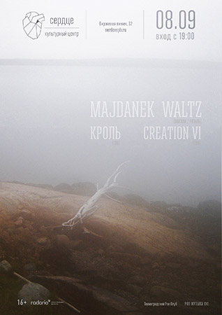
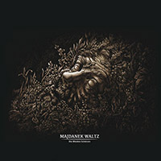
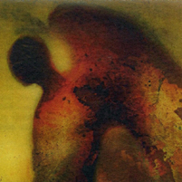
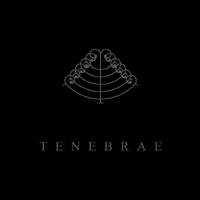
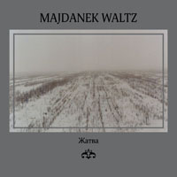
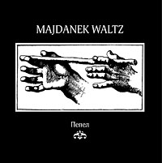

04.2020
There are musical groups for which it is necessary to mature.
And there are albums that need to mature. Four years after the
release of the last full-length album, bypassing a series of
collaborations and experiments with like-minded Patimat Khripa,
Vintersolverv and The Noktulians, Majdanek Waltz returns with a new
album. The album, the songs for which were composed about ten years
ago, during the classical works of the project, has found its final
form now: verified, very personal, chamber. The musicians left
behind noise landscapes and experiments with sound, presenting an
emotional, almost completely acoustic sound canvas, again recalling
the reason why they were once called "the best group of Russian dark
folk."
Nineteen people took part in the recording of the album, among
others, Andrzej Zakharishchev von Brausch (Obermaneken), Alexander
Ionov (Fire, Region-77), Alexey and Elena Sheptunovs (Moon Far Away).
Mastering by Jhonnie Kratong (Romowe Rikoito, Kratong).
The album was published in three formats: a standard CD, a
limited-edition cassette in a cardboard box and a collector's
two-disc edition in a mini-vinyl envelope, supplemented by the
single "Your Traits" ("Òâîè ×åðòû") and a set of four postcards.
https://codmusicdistro.bandcamp.com/album/her
12.2017
Aleister Crowley's poems translated into Russian were first published in 2017 – the same year we release the album on which musicians inspired by his works create their sonic dedication. This album was created by Russian dark scene musicians who have never met before but have been following each other's activities for a long time – Majdanek Waltz and Denis Tretyakov.
The latter professes his own religion which implies faith in a mole as an underground deity. Being the leader of two bands – "Tserkov' Detstva (Church of Childhood)" and "Bratya Tuluzovy (The Tuluzov Brothers)" – for the first time he acted as a reciter of poems. Majdanek Waltz from Ryazan' remembered their early musical experiments and primary sources of inspiration. Priceless support was granted by the secret musical project The Noktulians. The final black balance was masterfully adjusted by the member of Reutoff and Otzepenevshiye – ArSch aka Myrrman.
Apart from all other obvious jubilees and important round dates, 2017 marks the 70-year anniversary of Aleister Crowley's death. This recording should close the gap of the jubilee list of the year. Instead of the always fashionable red stars better use this black digipak. Put it in windows, nail it to the front door, take it with you wherever you go. "Every man and every woman is a star".
https://kultfront.bandcamp.com/album/pentagram?fbclid
09.2018

02.04.2016
MAJDANEK WALTZ
"Die Blinden Schützen" 2016

6-panel digipack with slipcase
Compact Disc (CD)
LP
Record/Vinyl
Ships out within 5 days.
Unlimited streaming of "Die Blinden Schützen" via the free Bandcamp
app, plus high-quality download in MP3, FLAC and more.
http://sulphurflowers.bandcamp.com/album/die-blinden-sch-tzen
04.04.2015
MAJDANEK WALTZ is
confirmed for the international festival Wave Gotik Treffen.
Our playing day is Saturday, 23rd May, Leipzig/Germany.
All information about tickets/bands:
http://www.wave-gotik-treffen.de/english/bands.php
13.09.2014
MAJDANEK
WALTZ “Nachtlied” 2014

Infinite Fog
Productions presents a new full-length album of one of the most
notable projects in the Russian post-industrial scene. "Nachtlied"
is the second part of a planned trilogy, first one was album "Tenebrae"
2011, joint release with Sal Solaris.
Recorded "Nachtleid" attended by 13 musicians - piano, guitar,
violin, viola, cello, clarinet, flute, trumpet, oboe. And well known
band Reutoff play as guests on album.
Those who have been following the work of Majdanek Waltz, usually
notice evolution of their ark, complexity of the structure of the
compositions, strength and mature of reflection, the depth of sound,
all this quality increases from album to album and not an
exaggeration to say that with "Nachtlied" group revealed deeper
their potential.
"Nachtlied" in a good way very cinematic album that draws more than
hour-long picture, which we hope will please fans of the band, as
well as us. Pavel Blyumkin characteristic vocal accompaniment
neoclassicism, neofolk, dark ambient, martial ... to give a
description of the project by means of music tags has long been a
pointless, but corporate identity MW still remains easily
recognizable.
http://infinitefog.ru/index.html
28.10.2013
Majdanek Waltz - LVCIFER (2013)

Nadeln Prod, NaP.VI
limited edition: 13 numbered copies, handmade.
contacts:
nadelnpr@gmail.com
http://vk.com/nadeln
download:
https://majdanekwaltz.bandcamp.com/album/lvcifer
17.04.2013
Majdanek Waltz
"Where the secret sleeps forever"

The best neofolk project of Russia MAJDANEK WALTZ fills the lacune
in the creative program, and now something has to be changed. Let us
explain: the single "Where the secret sleeps forever" is a musical
transcription of the poem of Sergey Esenin. Surprisingly, this is
the first time MAJDANEK WALTZ turn to the poetic heritage of their
countryman, but consonance of souls is felt from the first sounds.
Esenin's melancholy is fully translated into dialogue of viola and
flute, strict recitation and drumming handwriting of domra. Words
and sounds slide down like heavy tears to the expance, changing to
Ryazan wasteland: "I'm a guest just accidental / At your mountains,
my land." Among the guest musicians to record the song was the
singer Rada Anchevskaya.
04.2013
Photo gallery from the latest gig:
MW and Rome.
Our
bandcamp.
06.2011

Majdanek Waltz /
Sal Solaris
"Tenebrae"
ZHB-XXXIII / SPR127
A collaboration album by two
prominent Russian post-industrial projects Majdanek Waltz and Sal
Solaris. The conceptual core of the record is the poetry of Paul
Celan, one of the major German-language poets of the post-World War
II era. His cryptic fractured lyrics spoken in a specific estranged
way by Pavel Blumkin is enchased by a weird fusion of avant-garde
neoclassic and dark ambient music.
This record will seem unusual even for those who are already
familiar with the works of both projects. Here you won't find
neither soulful neofolk songs, nor strong power ambient - instead
the decadent sounds of violin, cello, clarinet, piano and bayan from
Majdanek Waltz blend with shimmering electronic drones and uneasy
soundscapes of Sal Solaris in paradoxical unity making your heart
throb painfully. The last track features the haunting voice of Rada
Anchevskaya (Rada & Ternovnik).
It won't be so easy to fall in love with this album from the first
spin. It's like an eerie irrational dream able to frighten and cause
a desire to wake up somewhat quicker. But the depth of this dream
lures and makes you return and experience it again and again.
"This is time's eye: it squints out from under a seven-hued eyebrow.
Its lid is washed clean by fires; its tear is hot stream. Towards it
the blind star flies and melts at the eyelash that's hotter; it's
growing warm in the world and the dead burgeon and flower".
You can watch the short album teaser
here.
You can order the album
here and
here.
11.2009

Majdanek Waltz
"The Harvest"
"The Harvest" is the final part of Majdanek Waltz's trilogy. The
record is a retrospective of the group's irregularity. In addition
to classic style touches, it widely represents the experimental
abyss of the group. Among the persons who participated in this album
- besides the author of texts Georg Heym, a flutist, a cellist, and
general members of Majdanek Waltz - Saint-Petersburg project
Anthesteria worked on the recording.
Edition of 250 numbered copies.
The disc was released November 9, 2009, by
kultFRONT label (St.
Petersburg)
10.2009

Majdanek Waltz
"Ophelia"
"Ophelia" is the second part of a trilogy by Majdanek Waltz. This
disc can be considered as evolution of the musical and lyrical
essence of the band introduced by the "Hamlet's Childhood" album,
and is based on original acoustic music of the band coupled with the
lyrics of the German early XX century expressionist poets Paul Zech
and Georg Heym. All compositions are published for the first time.
The CD was released on October 9, 2009 by joint efforts of the
Moscow label
Wroth Emitter and St. Petersburg
label
kultFRONT.
09.2009
The MAJDANEK WALTZ album “Ashes” will be released on 09.09.09.
by
NADELN Prod.
Distribution by
STRELY PERUNA Prod.

Majdanek Waltz
"Ashes"
«Ashes» is the first part of MAJDANEK WALTZ trilogy. This album
contains all tracks which were previously recorded exclusively for
the compilations, different versions of some compositions also
released on the compilations and new unreleased tracks.
MAJDANEK WALTZ stays within their own tradition – melancholic and
twilight, anxious and «transparent» neo-folk with brilliant
fragments of embracing darkness and martial atmosphere. All the
texts are in Russian.
10.2008
October, 19 – Moscow – for the first time in Russia a
concert-show of
European neo-folk leaders
Sonne Hagal
(Germany) and
:Of The Wand And The Moon:
(Denmark)
is taking place in the “Dom”; Majdanek Waltz (Russia)
participating in the performance.
MAJDANEK WALTZ
T-shirts printed (Single-sided
printing, phosphorescent dye used.
Image glows in the dark! Sizes from XS to XXL, 100 pieces total).
New release of the
INDIE-VID line:
Majdanek Waltz "Black Sun"
The album can be purchased in the store chain of
Soyuz and on the site
Ozon.
09.2008
Opening of the English version of the site. Here you can get to know
all about the creative work of the group Majdanek Waltz: music,
released albums, concerts, reviews.
|